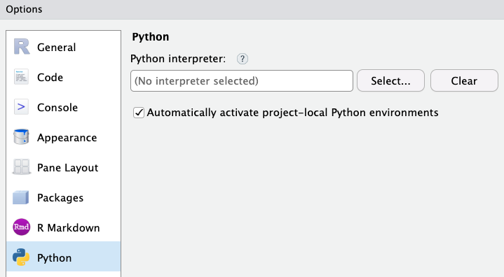
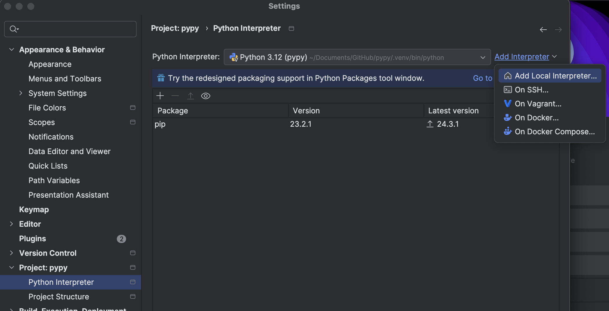
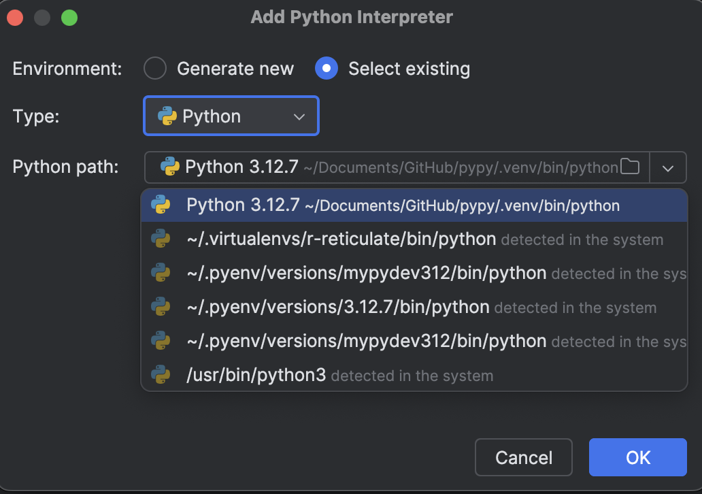
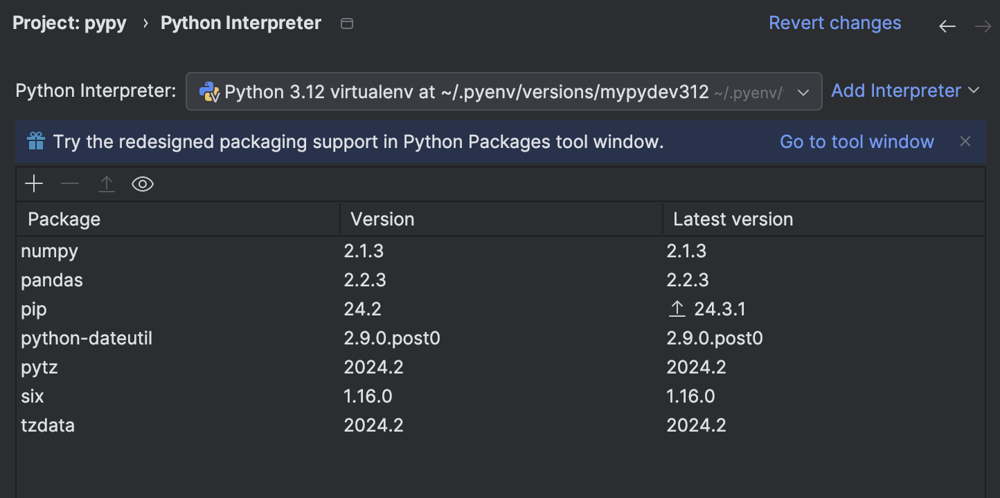
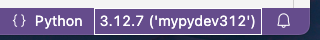
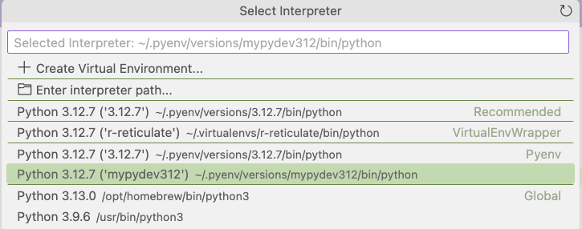

Python set up via pyenv
Setting up Python environment
Installation
Check the environment
Might need to create the .zshrc if you don’t have it
touch .zshrc
ls -laFind homebrew - if don’t have it, need to install it; if have it, might have to update it
which brew
# /opt/homebrew/bin/brewInstall pyenv
brew install pyenv
# check if it exists
which pyenv
# /opt/homebrew/bin/pyenv
echo $PATH
# check if the path is addedCheck version
pyenv --versionInstall python through pyenv
Decide which version of python you’d like to install.
pyenv install 3.12.7After it’s done, check if it exists
which python # does not exist
pyenv global 3.12.7 # set the global python to be this version
pyenv versions Modify the .zshrc file: add two lines in the file
nano ~/.zshrcType in the following, and save.
eval "$(pyenv init --path)"
eval "$(pyenv init -)"Check if they are correctly added. If it is, load them by using source
cat ~/.zshrc
source .zshrcNow check again which python you have,
which python
# /Users/your_name/.pyenv/shims/python
python --version
# Python 3.12.7
# try run python in the terminal
python
# exit python with ctrl + zVirtual environment
Install the pyenv-virtualenv first.
brew install pyenv-virtualenvDecide a name for the virtual environment you want. For this one I’m using mypydev312.
pyenv virtualenv 3.12.7 mypydev312
# check what you have
pyenv virtualenvs
# ~/.pyenv/versions/mypydev312/bin/pythonActivate it then try to deactivate it
source .zshrc
pyenv activate mypydev312 # (mypydev312) should be printed in front of your user nameInside the virtual environment, can also check which python version.
which python
python --version
# run python
pythonDeactivate the virtual environment,
pyenv deactivatePackage installation in virtual environment
Inside your virtual environment, try to install some packages.
# if not already activated, do this
pyenv activate mypydev312
# check pip
which pip
# /Users/your_name/.pyenv/shims/pip
pip install numpyUse virtual environment with IDE
Rstudio
Can go to Tools -> Global options -> Python, and select the virtual environment.


Pycharm
Go to Settings -> Project -> Python Interpreter. You might see that the packages you want are not available; as we have installed numpy in our virtual environment mypydev312, this is expected.

Set up the virtual environment of our choosing by selecting Add Interpreter -> Add Local Interpreter. Select an existing one in the list.

Now you see the ones we installed (numpy, pandas) are readily available.

VSCode
If you open VSCode and run your python code, but it is missing modules, it suggests that the interpreter isn’t correctly specified. You can see which interpreter you’re using on the bottom right.

Click on it, you can select the one you would like. We are using the virtual environment mypydev312 so this is the one we choose.
